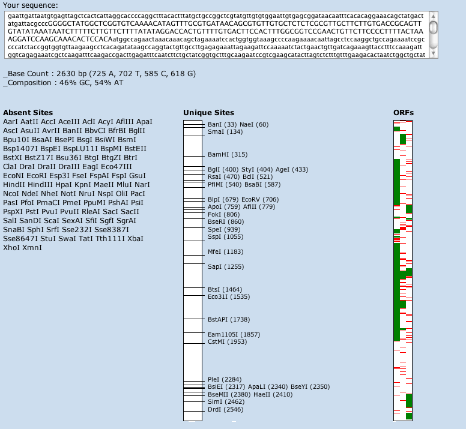

GeneDesign's Sequence Analysis module allows you to examine the composition and melting temperature of single sequences or groups of oligos.

The Sequence Analysis Module
The Sequence Analysis Module
Simply paste your sequence(s) into the text box, check which kind of sequence you analyzing, and click the "analyze" button. The next screen will display a base composition and a list of melting temperatures for each sequence you input.
If you put in a single sequence you will also see a list of prototypes and their neoschizomers that are absent from the sequence, a map of the same that are unique, and a vertical chart of the open reading frames in the first three frames. The first column of the ORF chart is the first frame, the second column the second frame, etc. Green bars indicate an ORF; red bars indicate a stop codon.
To analyze another single sequence, you do not have to go back. Simply replace the sequence in the text box with the new sequence and click "analyze again."
If you are analyzing a list of oligos, say for the purposes of verifying base content, length, or melting temperature, paste them in the the box with carriage returns between each oligo. On the next screen you will see a table. The first column is the oligo, the second the oligo number (assigned in the order the oligo were input), then the percent GC and AT. Then you will see three letter number pairs. B stands for Baldino et al, P stands for Primer3, and N stands for nearest neighbor. These are the three formulas with which the melting temperature is calculated. For more discussion of Tm, see Building Block Design (at the bottom of the page).